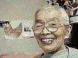

午前六時、目が覚めた。もう眠れない。年を取ると、将来の夢でなく、在りし昔の追想ばかり。
十五才になる真理の事。あの子は、足が強く、早くから歩けた。生後十カ月で一歩二歩とあるき出し、誕生日には走り廻つた。この頃の私は、孫の守でたのしみ一ぱいである。思い出たのしく頭にえがく。
かけ出す様になつて来た。其の頃、井の頭公園の近くに住いしてゐた。公園によく行つた。入口にブランコ、スベリ台があつた。
二人を連れてゆくと、ゆきと同じ様にかけ出してブランコにのる。ブランコがあきると、スベリ台に二人で競争でやるので、上達が早い。小さいのに走つて行つて、高いスベリ台にのぼる。もう追付かぬ。あれあれと思う内に、高い所から私を呼ぶ。走つて下に寄り、私は待ちかまへる。スルスルと上手にすべる。公園の中程にある遊び場に、高いスベリ台があつた。もうどんな高いところからでも大丈夫になると、私はそばのベンチでこしかけて、眺めてゐれば、大丈夫であつた。
井の頭公園の眺めはよい。一年中、眺めは変る。正月の寒い頃、水鳥は、池の面に水蒸気が立ちこめる中を、すいすいとおよぐ。きれいな水鏡の如き水面を波を繪書いてゆく。繪の様である。
人気の少ない公園。広々とした静かな中で胸一ぱい冷たい空気を吸い込む。遠くに静かに歩く人影がある。
三月に入つて、桜の花の固い時、今に花が開いたらと心に繪書きたのしむ。子供と桜の花の話をしながら、うば車をおしてゆく。もう子供はじつとしてゐない。走り廻つてブランコすべり台砂遊び、冷たいことも忘れたみたいに。
夏の公園の青葉の木陰にこしをおろし、べんとうを開く。簡單なおべんとうもおいしく、おしやべりしたり歌つたり、たのしい一日をすごし、三人で帰る。由記は三輪車をおし、真理はうば車に乗せて、坂道を一生懸命上る。ほんとうにたのしかつた。今でも思う丈で、たのしい。心に思う事なく、たのしい時代であつた。
有名な井の頭公園を遊び場にして、幾年か過した。たまには動物園にまわり、象の前にひきつけられて離れぬ子供達。乗り物の汽車に走り込んで、バイバイと手を振る時の楽しそうな顔。遊びつかれておやつを手に猿の山を眺め、おせんぺい等投入れる。猿の親子のたわむれ、いだき合つて、のみ取りしてゐる様。親子の愛情見るにたのしい情景である。
いつかであつた。公園の奥の方で、子供十人位集めて、三輪車の自転車競走をやつてゐた。
由記もそれに参加した。よく走れて二三等になつた。皆に賞品が贈られた。藤だな下のたのしい情景である。
公園の中に水族館もある。そこに亀が居た。日のあたるところに甲らをほしてゐる。大小のたくさんのかめに走り寄つて一生懸命見る。ペンギンのところは面白い。よちよちの歩き方をまねてたのしんだ。池には鯉が沢山居る。ふを買つては橋の上からなげて鯉をよせる。由記、それをおいかけて行く。真理、いつも走つて歩く。二人の光景を思い出すだにたのしい。
いつまでもいつまでも仲のいい姉妹であつてくれる様に、と願う。今年七十才になつた私はいつまでもいつまでも在りし日の井の頭公園のたのしい思い出は消えないであらう。
其の頃は人気が少なくていいところであつた。いい時代であつた。はら一ぱい遊べるところであつた。
| ばあちゃんの食いもん |